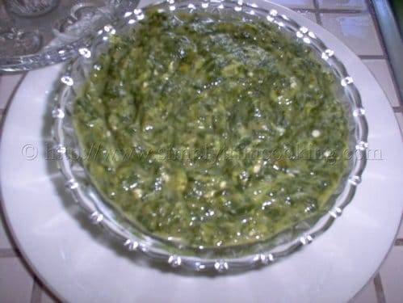

Trinidadian Callaloo.
The crown jewel of Caribbean cuisine.

Ingredients
- 1 Bundle Dasheen Bush
- 12 Fresh Okras
- 1/4 lb Pumpkin
- 2 cups Fresh Coconut Milk
- 1 Onion & Garlic
- 3 Pimento Peppers
- Smoked Bone or Salt Meat
Preparation
- Combine dasheen bush, okra, pumpkin, and aromatics in a heavy pot.
- Add coconut milk and the flavor vector (meat).
- Simmer until all ingredients are soft (about 45 mins).
- Swizzle or blend until smooth and velvety.
- Adjust salt and serve warm.